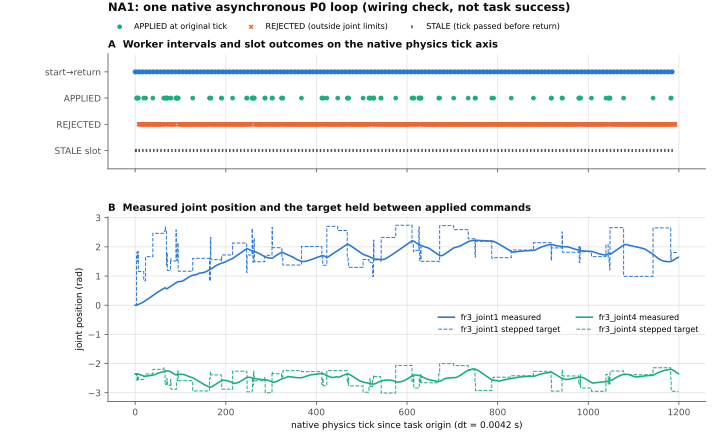

每个字段都有上界
会进入保留事件的字符串必须是有长度上限的可打印 token，整数和浮点数也有界。于是每类保留事件都有确定的最大行长。
v0.1 在 STALE/PADDING 分支不检查 authorization，可以塞进任意大的对象；v0.2 对所有分支都检查。2026.10.19 / NATIVE WIRING EVIDENCE
先补上日志的字节预留，保证接纳后的案例一定能合法结束；再在原生 Isaac 场景中跑一次异步闭环。CPU 进程推理时，主进程继续步进物理；返回的动作只在各自原定的 tick 生效。
01 / CAPACITY FIX
v0.1 只预留事件条数，没有预留字节：5,360 B 的上限下，它在 5,260 B 处接纳了一个推理 ticket，随后 CASE_END 写不进去。今天用原 v0.1 源码重新复现了这个失败。v0.2 的不变量是：已写字节加上剩余预留，始终不超过上限。
会进入保留事件的字符串必须是有长度上限的可打印 token，整数和浮点数也有界。于是每类保留事件都有确定的最大行长。
v0.1 在 STALE/PADDING 分支不检查 authorization，可以塞进任意大的对象；v0.2 对所有分支都检查。每个 ticket 预留它的返回、8 个槽位处置和每条命令的回执；整个案例另外预留 refusal 回执和最坏长度的 CASE_END。
64 字符 token 时，一个打开的 ticket 约预留 35 KB。新状态、数据包或推理开始，如果会挤占预留空间，就在写盘前被拒绝，状态和文件都不变。只读回放用同一道检查逐行重算。
绕过检查写出的伪造日志，会在回放时在违约的那一行被拒绝。v0.1 的 41 项作者测试移植后全部通过，新增 16 项容量测试也全部通过。每个起约束作用的步骤都测了 cap−1 / cap：在 cap−1 时该步骤被拒但案例照常结束，在 cap 时该步骤被接纳并照常结束。普通值和最坏取值两种模式都测了。
原反例序列在 v0.2 下：5,360 B 时在 CASE_BEGIN 处就拒绝，因为 refusal 回执和最坏 CASE_END 在开始时就已预留；start 的最小接纳上限是 43,124 B。以 7 B 为步长扫描 6,189 个上限，没有出现已接纳却无法结束的案例。
独立 agent 自写了 reader 和 fuzz：2,560 次运行，写入 31.5k 个保留事件，没有发现违反字节或条数预留的情况，与模块逐日志一致。
它确认的缺陷不在预留算法本身：一是类型与回放的严格性（相等但类型不同的值、子类对象、宽松的信封类型、原生异常）；二是 README 把“所有保留事件都写得进去”说过头了，实际上只有 CASE_END 无条件成立。v0.3 用 canonical JSON 往返和精确类型修正了这些问题。用审查者原脚本复跑 v0.3：交叉检查全部一致，fuzz 异常为 0。NA1 使用的是 v0.2，其日志经审查者 reader 检查为 PASS。
审查报告与独立 reader ↗02 / NATIVE CAMERA
03 / ACTUAL TRACE

worker 计算中位 5.46 ms（3.75–13.8 ms）。149/149 次计算区间与真实物理步进区间重叠，重叠中位 3.9 ms。owner 从不等待 worker。
owner 每个 tick 只读取一次返回，所以每个 ticket 的第 1 槽返回时已过期，记为 STALE（共 150 个）。其余 1,042 个槽位提交 FIFO；生效的 99 条全部恰在原定 tick，每 tick 至多一条。
物理步进中位 4.4 ms，但 owner 每次迭代还要渲染、fsync 和写日志：中位 169 ms，平均 250 ms。5 s 仿真共用约 300 s 墙钟。
04 / VERIFICATION AND LIMITS
reader 不重跑任何东西，只读原始文件，检查以下各项：日志回放能正常关闭；每个 ticket 都有返回或删失记录；ticket 跨越的 tick 数与状态事件数一致；APPLIED 恰在原定 tick 且每 tick 至多一条；每个 tick 下发的目标等于刚生效的命令或沿用上一目标；worker 原始输出与日志一致；worker 参数前后不变、未初始化 CUDA；视频帧完整可解码；每个 ticket 有对应的请求帧。
预算：正式原生案例 1 个，启动 1 次，退出码 0，源码冻结前后不变。执行前做了 4 次 CPU 预演，发现 nominal_offsets 单位错误（应为秒，误传为 tick），在冻结前修正。
P0 只在一个已见过的 M1 episode 上做过 200 次 CPU 更新。机械臂移动之后，它的输入很快离开训练分布：1,042 个提交目标中有 943 个超出关节限位，越界值最高约 ±38 rad。守卫全程未触发。
这次没有评分任务、受力或承重资格，也没有化学终点、S/F/R 准入、M/B3 对比或真机。下一步是让 owner 按墙钟节奏推进（渲染移出关键路径、日志批量持久化），并用合格数据训练的策略替换 P0。
05 / SCIENTIFIC FRONTIER
字节预留关闭了 10.16 留下的原生阻塞项；一次原生异步闭环证明推理与物理并行、动作只在原定槽位生效，并留下了完整日志和视频。
墙钟节奏的 owner → 独立物理终点 → 合格 S/F/R 数据池。
M/B3 仍然 UNTESTED。本轮不包含策略优势、时间精度提升、任务泛化或真机化学结果。
06 / SOURCE-BOUND ARTIFACTS